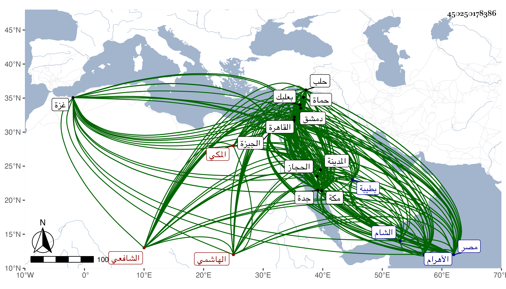

0902Sakhawi.DawLamic.ITO20230111-ara1.EIS1600.450250178386
Biography ID: 450250178386
574
عبد العزيز بن عمر بن محمد بن محمد بن أبي الخير محمد العز أبو فارس وأبو الخير ابن صاحبنا النجم أبي القسم الهاشمي المكي الشافعي ويعرف كسلفه بابن فهد ، وأمه عائشة ابنة العفيف عبد الله بن محمد بن علي العجمي الأصل . ولد في الثلث الأخير من ليلة السبت سادس عشري شوال سنة خمسين وثمانمائة بمكة في غيبة والده بالقاهرة وسمى عليا أبا الخير ثم غير لكون أبيه رأى في منامه قائلا يقول له جاءك ذكر فسمه عبد العزيز أبا فارس ونشأ فحفظ القرآن وأربعي النووي والارشاد مختصر الحاوي لابن المقرىء والنخبة لشيخنا وألفية النحو والوردية والجزومية كلاهما في النحو أيضا وعرضها بتمامها على أبيه وجده وكذا عرض على العادة ما عدا النخبة والأخيرين على جماعة من أهل بلده ومن القادمين إليها كالبامي وابن القصبي المالكي وكتب إجازته نظما ثم حفظ أيضا غالب ألفية الحديث وجانبا من المنهاج الأصلي واعتنى به والده فاستجاز له خلقا منهم شيخنا وأحضره وأسمعه على كثيرين من المكيين كأبي الفتح المراغي والزين الأميوطي والزمزمي وغيرهم بها وبأماكن منها كمنى وجل ذلك معي ولما ترعرع قرأ بنفسه وتوجه غير مرة للزيارة النبوية وسمع فيها بطيبة من جماعة ، وارتحل في سنة سبعين من البحر فأكثر بالديار المصرية من القراءة والسماع ومما أخذه عن الشمني في البحث بعض شرحه لنظم أبيه للنخبة وعن البقاعي في متنها مع شيء حاذى به متن إيساغوجي ، وسمع بمصر والجيزة وعلو الأهرام وغيرها من أماكنها وكذا بجدة في مجيئه ولما انتهى أربه سافر في أول السنة التي تليها إلى البلاد الشامية فسمع في توجهه بالخانقاه السرياقوسية وزار القدس والخليل وسمع بالقدس وبغزة ونابلس ودمشق وصالحيتها وبعلبك وحماة وحلب وغيرها من جماعة ، واجتهد في كل ذلك وتميز في الطلب واستمد مني ثم عاد فيها إلى بلده مع الركب ثم رجع من البحر أيضا في سنة خمس وسبعين وقرأ علي في بحث ألفية الحديث مع غيرها من تصانيفي وحضر عندي في الاملاء وغيره بل وقرأ على الشرف عبد الحق السنباطي كتابه الارشاد ثم سمعه عليه إلا اليسير في مجاورته ، وكان أحد القراء في تقسيم المنهاج على السراج العبادي ولكن لم يتهيأ اكماله وقرأ على الشمس الجوجري قطعة من أول شرحه على الارشاد وكتبه بخطه وعلى الزيني زكريا في المتن وكان جل قصده من هذه القدمة الدراية ورجع إلى بلده ثم سافر منها للدراية أيضا إلى الشام في موسم السنة التي تليها وزار المدينة في توجهه وقرأ في دمشق على الزين خطاب قطعة من أول الارشاد وكذا على المحب البصروي وكان قد أخذ عنه بمكة أيضا وحضر دروس أولهما مع قليل من دروس التقي بن قاضي عجلون هناك ووصل منها إلى حلب ورجع لمصر أيضا ثم لبلده مع الركب ثم دخل القاهرة أيضا مع الركب في سنة أربع وثمانين فلازمني في السماع والقراءة وكان مما قرأه على قطعة كبيرة من أول شرحي لألفية الحديث وجميع شرح النخبة وحضر كثيرا من مجالس الاملاء بل واستملى بعضها وأكمل الربع الأول من شرح الجوجري للارشاد عليه وحضر عنده تقسيم التنبيه إلا يسيرا وتقسيم جميع ألفية ابن مالك سوى مجلسين أو ثلاثة بل هو ممن لازمه حين مجاورته بمكة حتى سمع عليه شرح الشذور له وغالب متن البهجة وكذا لازم إمام الكاملية في الفقه وغيره وقرأ عليه غالب الوردية في النخو ومما أخذه عن العبادي في القدمة الرابعة في الروضة أو الخادم ، ورجع مع الحاج فيها إلى بلده فأقام ملازما للاشتغال والاقبال على شأنه ، ولما جاورت سنة ست وثمانين والتي تليها أكثر من ملازمتي بحيث قرأ على ما كان في كتب والده من تصانيفي وهو شيء كثير وحصل هو أيضا أشياء قرأها وأكمل سماع شرحي للألفية مع تكرر كثير منه له وكذا سمع علي ومني غير ذلك وممن لازم ببلده في الفقه والتفسير عالم الحجاز البرهان بن ظهيرة وفي الفقه فقط مع أصوله والفخر أخوه والنور الفاكهي أخذ عنه المنهاج وكان أحد القراء في تقسيمه وقرأ عليه الربع الأول من الارشاد بل حضر عنده في النحو وغيره وقرأ على يحيى العلمي المالكي المنهاج الأصلي مرتين وألفية ابن مالك وتوضيحها لابن هشام وحضر عنده في الجمل للخونجي وسمع جميع التوضيح والألفية مرتين إلا اليسير على المحيوي المالكي وقبل ذلك أخذ في النحو عن أبي الوقت المرشدي ثم بأخرة عن الشريف السمهودي الايضاح في المناسك للنووي وقطعة من أول ألفية النحو ، وبرع في الحديث طلبا وضبطا وكتب الطباق بل كتب بخطه جملة من الكتب والاجزاء وتولع بالتخريج والكشف والتاريخ ، وأذنت له في التدريس والافادة والتحديث وكذا أذن له الجوجري في تدريس الفقه والنحو والافادة والمحيوي ضمن جماعة في إقراء الألفية وليس بعد أبيه ببلاد الحجاز من يدانيه في الحديث مع المشاركة في الفضائل وجودة الخط والفهم وجميل الهيئة وعلى الهمة والحياء والمروءة والتخلق بالاوصاف الجميلة والتقنع باليسير واظهار التجمل وعدم التشكي وهو حسنة من حسنات بلده .
